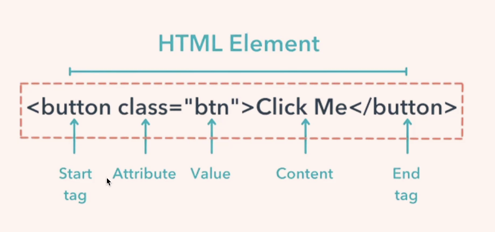
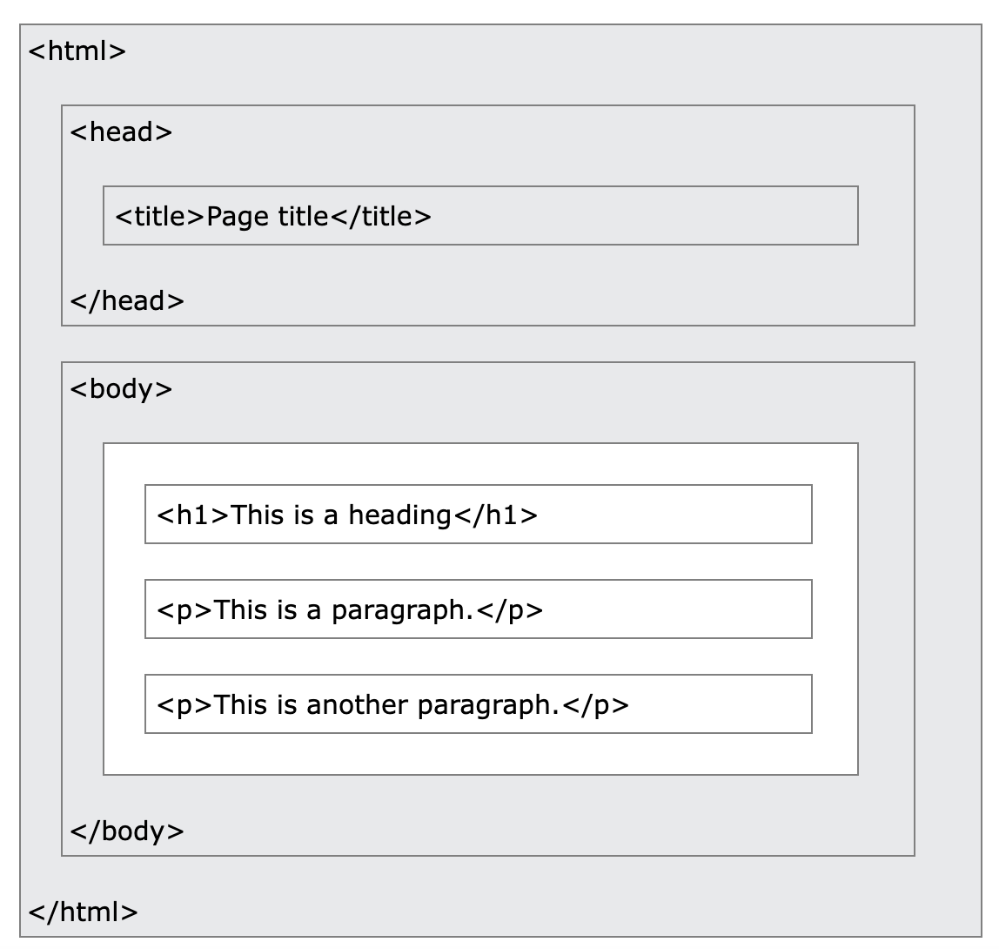

An HTML element is defined by a start tag, some content, and an end tag:
Below is a visualization of an HTML page structure:
Since the early days of the World Wide Web, there have been many versions of HTML:
| YEAR | Version |
| 1989 | Tim Berners-Lee invented www |
| 1991 | Tim Berners-Lee invented HTML |
| 1993 | Dave Raggett drafted HTML+ |
| 1995 | HTML Working Group defined HTML 2.0 |
| 1997 | W3C Recommendation: HTML 3.2 |
| 1999 | W3C Recommendation: HTML 4.01 |
| 2000 | W3C Recommendation: XHTML 1.0 |
| 2008 | WHATWG HTML5 First Public Draft |
| 2012 | WHATWG HTML5 Living Standard |
| 2014 | W3C Recommendation: HTML5 |
| 2016 | W3C Candidate Recommendation: HTML 5.1 |
| 2017 | W3C Recommendation: HTML5.1 2nd Edition |
| 2018 | W3C Recommendation: HTML5.2 |